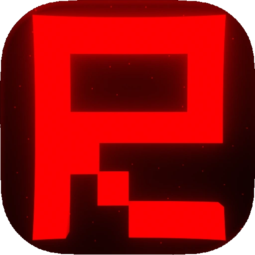
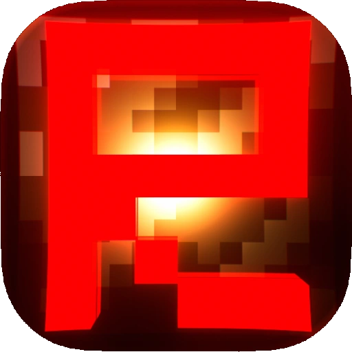

Raiden Visuals Free Download
Pilih salah satu untuk versi stable dan beta. Harap panduan instalasinya dibaca, ya.


Apa itu Raiden Visuals?
Raiden Visuals Adalah Custom Deferred Configuration Yang Dapat Mengoptimalkan Performa Vibrant Visuals Pada Minecraft Bedrock.
Keunggulan
Mengoptimalkan Bayangan Pada Vibrant Visuals.
Mengoptimalkan Refleksi Ruang Layar Pada Vibrant Visuals.
Mengoptimalkan Point Light Beserta Bayangan Pada Vibrant Visuals.
Mengoptimalkan Kabut Volumetrik Pada Vibrant Visuals.
Memperluas Opsi Jarak Render (Menjadi 1-50 Chunks).
Panduan Instalasi

ANDROID
Untuk sistem operasi Android, diperlukan aplikasi pihak ketiga seperti MB Loader, Levi Launcher, Ambient For MCPE, atau Flarial Client agar Raiden Visual dapat berfungsi.
-
MB Loader
Untuk MB Loader, cukup memasang file mcpack yang diberikan, lalu launch dengan shader loader MBL2 atau Fuse(Beta).

-
Levi Launcher
Untuk Levi Launcher, perlu memasang MaterialBinLoader 2 agar Raiden Visuals dapat berfungsi.

-
Ambient For MCPE
Untuk Ambient For MCPE, harus mengaktifkan fitur Shader Loader di dalam pengaturan launcher agar Raiden Visuals dapat berfungsi.
-
Flarial Client
Untuk Flarial Client, harus mengaktifkan fitur Shader Loader melalui Flarial shortcut (tombol mengambang dengan logo Flarial). Setelah mengaktifkan Shader Loader di Flarial Client, wajib restart Flarial Client agar Raiden Visuals dapat berfungsi.

WINDOWS
Untuk sistem operasi Windows atau Linux, cukup memindahkan folder "renderer" di dalam file mcpack yang diberikan, lalu tempelkan di lokasi.
Untuk Minecraft Bedrock versi stable, buka isi folder "subpacks\OfficialFix" lalu pindahkan folder "renderer" nya ke C:\XboxGames\Minecraft for Windows\Content\data
Untuk Minecraft Bedrock versi preview, tidak perlu memindahkan renderer didalam folder subpacks, langsung pindahkan folder "renderer" nya ke C:\XboxGames\Minecraft Preview for Windows\Content\data
Pengecekan GPU untuk android
Cek Kompatibilitas GPU HP-Mu:
Cek nama dan seri GPU HP-mu menggunakan aplikasi DevCheck, AIDA64, CPU-Z, atau Debug Text di Minecraft versi Beta.
Tier 1 dan Tier 2 tidak kompatibel, Tier 3 belum kompatibel untuk saat ini, Tier 4 sudah kompatibel, Tier 5 pasti kompatibel.
Jika GPU Anda masuk di Tier 3 tapi Vibrant Visuals tidak dapat digunakan maka sebentar lagi akan kompatibel di update minecraft selanjutnya.
Jika GPU Anda tidak terdaftar, maka kemungkinan besar tidak akan pernah kompatibel, solusi beli hp baru.
Tier 5 Adalah spek GPU tertinggi, sedangkan Tier 1 adalah spek GPU terendah.
Tier 1 Sama Tier 2 lebih kasihan sih. Akan sangat lama untuk dapat menggunakan Vibrant Visuals, mungkin tahun depan? Itupun dengan hasil visual dan performa yang lebih rendah.
website masih dalam pengembangan terus pantau...
📝 To Do List
- Perbandingan Performa Vibrant Visuals Bawaan Vs Raiden Visuals
- Perbandingan Bayangan, Block Light, Refleksi, & Kabut volumetrik dari Vibrant Visuals bawaan vs Raiden Visuals
- Tutorial Pemasangan untuk Android pada masing-masing Launcher mengunakan Screenhots Step By Step
- Rekomendasi GPU untuk menggunakan Vibrant Visuals
- Rekomendasi setingan opsi grafis Vibrant Visuals untuk performa dan kualitas
- Rekomendasi Vibrant Visuals Pack Agar lebih indah dan Immersive
- Join DIscord Untuk Info Update Terbaru Dan Berkomunikasi Mengenai Vibrant Visuals
- Rayuan Donasi Melalui Trakteer.Id dan menunjukan kelebihannya untuk download Raiden Visuals langsung ke mediafire tanpa melewati banyak iklan
- Pertanyaan dan jawaban Q&A